Wire has a NetworkStatus folder where constantly verifies the internet connection. In the case that there is no internet connection available a banner is shown at the top of the screen. Also, when the user tries to send a message Wire has a label where tells the user that the messaging it’s trying to be sent. After some time Wire shows two possible actions to be done: Resend the message or delete it. This is helpful to the user because it tells him that Wire tried to send it but it was not possible. Finally, when the bar is touched it appears a message telling the user a better description of the current network state. All these messages and alerts are shown below:
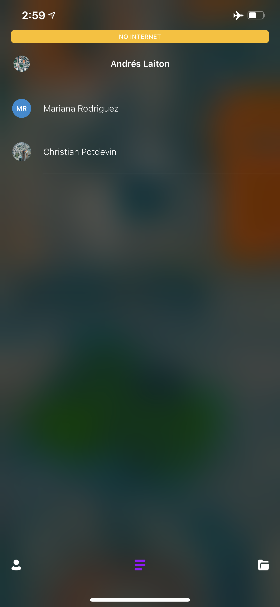 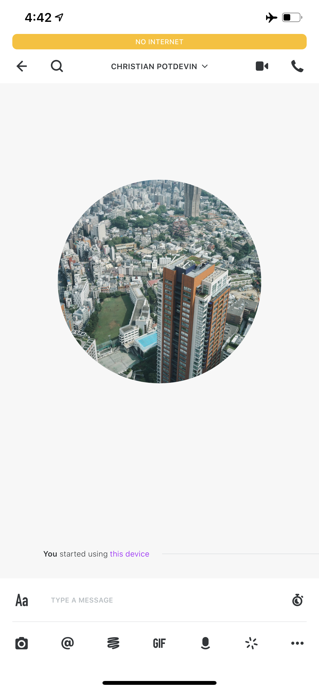 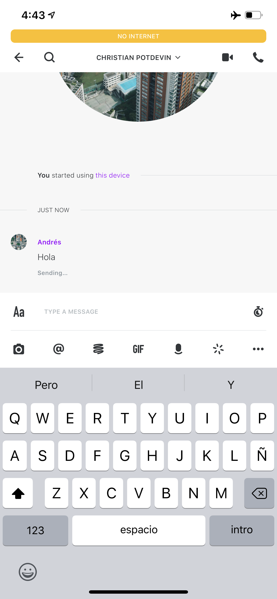 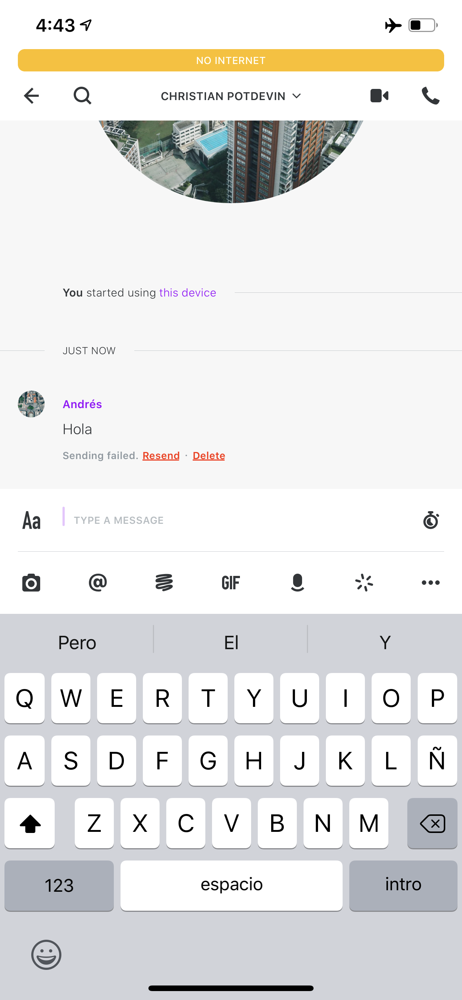
For this Wire has a View and a Controller, following the MVC of iOS, just avoiding the Model. In the first one Wire changes all the constraints and manages the Offline Bar if this has to be shown. The desition of what to do, which message to show and when is took by the Controller. Wire has all the code related to this in a folder to easily do find it and do changes.

Wire establish 3 different types of connection (Or non-connections) as a state. The first one is online, which is the desire and normal type of connection. When this case is the current one the offline bar is hidden. When one of the other two types is the current one the offline bar appears and shows a message according to the type of non-connection. Wire manages the state in an enum as shown below:
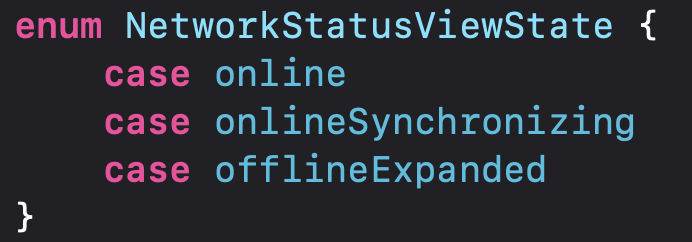The message can be resent and the red button of “resend” is shown. To do this there is a full pipeline of calls that start calling the following method, on “MessageToolboxView” class, when the user taps that button:
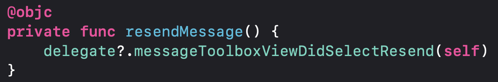This call the following method:
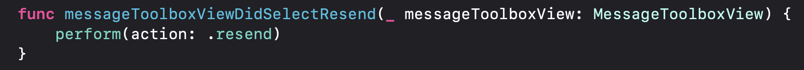As shown, it calls perform method with the action “.resend”. This is also called via Objective-C:
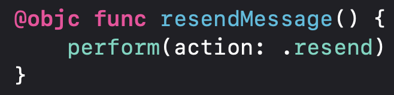There are different actions that can be performed. Wire established an enum to list them:
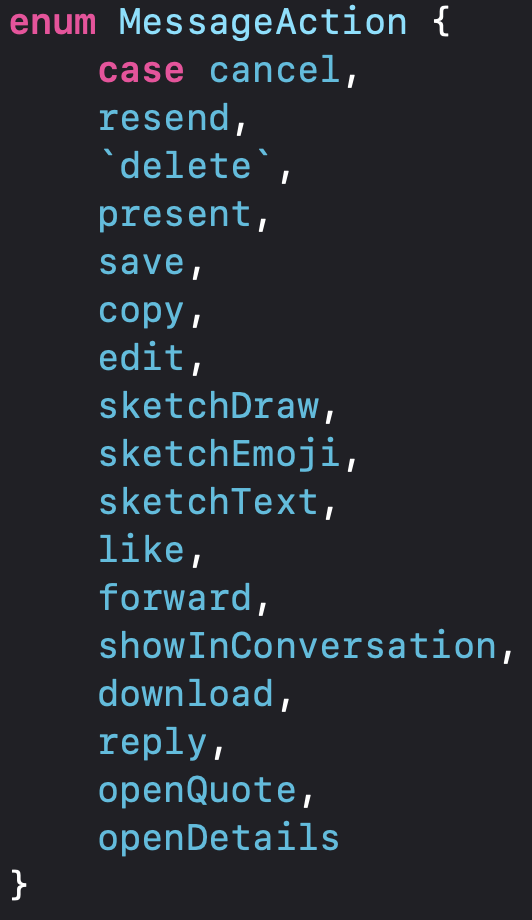To check it if the message can be resent there is a variable that stored this property:
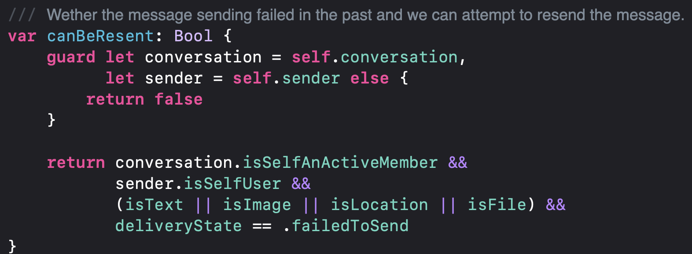In the “reloadContent” method, in the “MessageToolboxView” class, some cases are considered depending of what it’s is going to be painted. In the case of failure to send the message this happens:
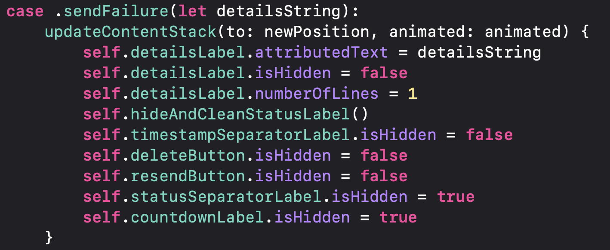This method just shows the red “resend” button and hides the others. The content that can be displayed it’s set by the following enum:
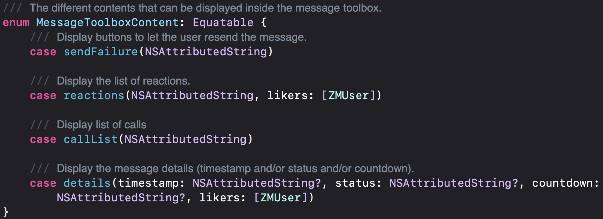Finally, the code that establishes all the style of the “resend” button is the following:
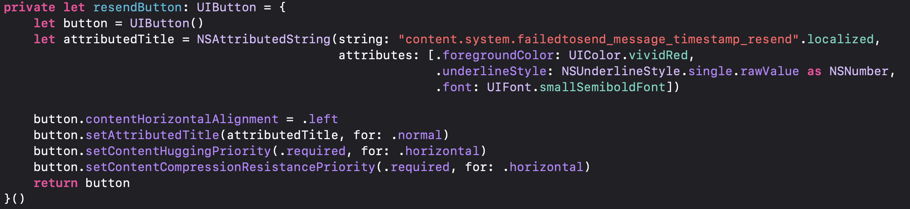It’s important to clarify that Wire does the same process without taking care of the type of message that failed to send.